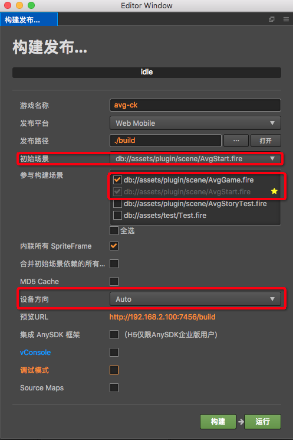

作品发布
发布Html5游戏
目前并没有做发布的封装,需要自己手动进行发布,发布流程如下
- 在菜单中选择项目 => 构建发布, 打开构建发布面板
面板参数设置如下
- 初始场景,选择AvgStart.fire
- 参与构建场景,选择AvgGame.fire,AvgStart.fire,其余场景不需要,勾选不会影响游戏本身,只会增加游戏发布体积大小
- 黄色的星星代表初始场景
- 设备方向: 尽量勾选和自己设置的游戏设计分辨率一致的方向
- 自己的作品为横屏,勾选Portrait
- 自己的作品为竖屏,勾选LandSpace
- 如果选择Auto,可能会出现一些未知问题,在游戏设计分辨率已知的情况下,尽量避免使用这个选项
点击构建,即可完成作品的生成工作,作品最终会存放在发布路径下
- 如需预览,点击运行即可进行作品预览
如何把作品共享给别人
通过以上的发布操作,最终会在发布路径下生成一份标准的h5游戏作品,只需要把这个h5作品部署到一台服务器上,他人通过提供h5的网页链接,即可欣赏该作品